How to compose and publish articles on harbour.wiki
 Author: Eric Lendvai
Author: Eric Lendvai
Table of Contents
- Revision History
- Becoming an Author
- Account Settings
- My first Article
- Article Basic Information
- Sample Article Management
- Sections
- List of Sections
- Article Name Translation
- Topics
- Push Notifications
- Authors
- Revision History
- Finding and Viewing Articles
- Conclusion
Revision History
| 02/15/2019 | Added linking of Web Push Notification subscription to currently logged in account. Picture of Two Factor Authentication activation. |
Becoming an Author
Unlike
wikipedia, where anyone can contribute to articles, you must first
apply to get a login account and receive an approval, which is mainly to
verify your email address.
The main reason for this
different approach is that our community is much smaller, and we don't
have enought people to review each articles. No approvals of the
articles you write and publish will be needed. As an Author, you will be
responsible to make the content as accurate as possible, and you can
assign additional authors to your articles, and specify who could work
on translating your documents. Your only real requirement is that you do
not use this site to write political, racial, derogative or
inappropriate content. You must ensure your article are about
Harbour, or computer technologies that can benefit Harbour developers.
If you do not comply to that simple requirement, your account will be
suspended and any of your content removed.
As an Author,
you will be able to promote yourself via the Information button visible
near each of your articles, allowing you to publish your name, picture,
Bio, link to your own site,or linkedin account for example.
Each article has its own direct link, so you could share it on your own site, or linkedin account for example.
Your
email will not be published, but if you allow readers to contact you, a
relay system will allow you to communicate back and forth with them. It
is purposely done this way to minimize spamming and to leave you on
control to choose if you want to continue to let people to contact you.
So
to start go to the "Authors" page (1), use the "Request a Login
Account" (2). It may take up to 24 hours for approval. You will be
contacted back at your email address with login instructions. Then
simply come back to the login page and use option (3).
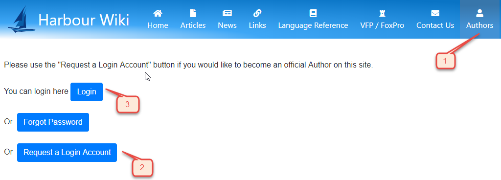
Account Settings
Once you login into the harbour.wiki, you should use the "My Account".
As soon as you publish your first article, the information to choose to share with others will be displayed.
It
is highly recommended to use the "Set Two Factor Authentication with
Google Authentication", to prevent unauthorized logins. You can install
the "Google Authenticator" app from the Play Store.
harbour.wiki
will provide you a QR Code that the Authenticator will use to link your
account to the app. This will generate a new 6 digit number every 30
seconds, that you will be able to enter in the login screen.
For additional information about the available settings, see the screen below:
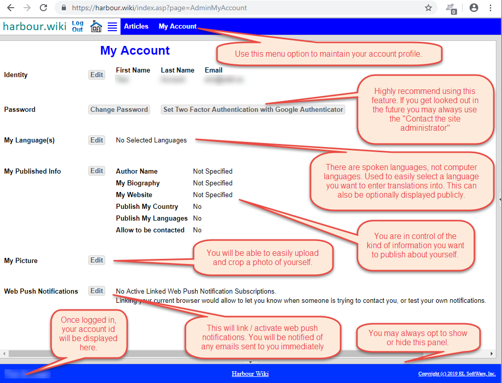
The following is the screen you will see if you use the "Set Two Factor Authentication with Google Authenticator"
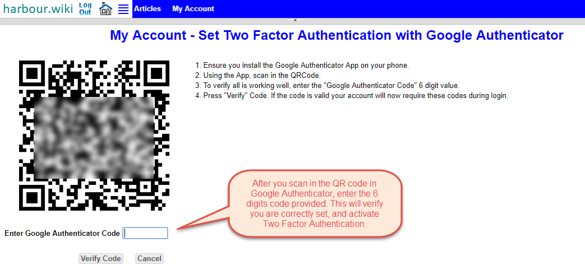
My first Article
To start with your first article, go to the "Articles" top menu (1).
Then simply us the "New" button (2)
You
will see that you can search for article using "Search" (3), and
configure the columns and order for your list of "Articles" (4)
You
can always use the "Author" drop down, to search for articles created
by other authors. You will be able to share views of your own articles,
even before published to the public with others. More on that later.
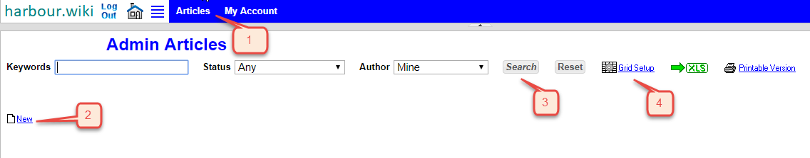
Article Basic Information
Each article has some basic setting.
Select
the primary language of your article, then enter an article name (1).
The status (2) will be used as the main method to mark your article to
be visible to the public.
Option (3) is used to specify if and
which type of information will be made visible to other authors, even
before your article is made public via option (2).
Option (4)
is any text your want to have. This field will be visible only to other
authors assigned to the current article and the site administrator.
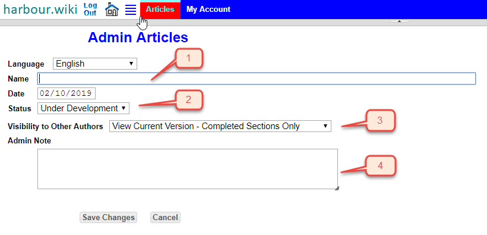
Sample Article Management
The following is an example of an Article that is already published.
You can use the "Preview" button to open a new tab in your browser with a preview of the article you are managing.
You will see multiple tabs that will allow you to manage the current article.
We will do a quick review of each of these tabs.
The main tab you will be working with is the "Sections". That is the area you will be using to actually compose the article.
The numbers above the tabs is an indicator of how many related records exists in each of these areas.
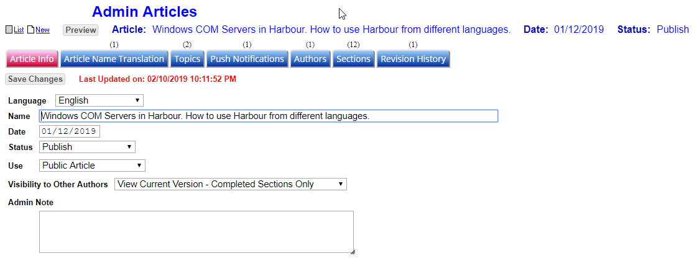
Sections
This
is the tab where you do all the composing. It is very important to
understand how this functions. And please use the "Preview" button to
see what your article is going to look like.
A lot of auto formatting is done for you. This is to help create a consistent look for all the articles.
Please use FireFox for now. Chrome seems to have some issues when uploading images.
An article is a sorted list of sections. Use the "New" (1) to create your first section.
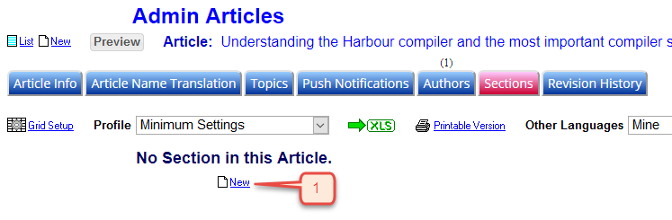
At first the entry screen will look very sparse (empty).
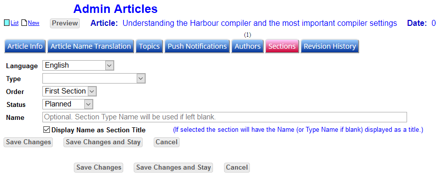
The
most important decision you will make is to select the "Type". This
will automatically add new entry field to this screen. Harbour.wiki is a
preset list of section types.
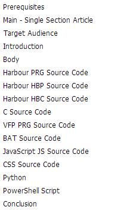 | Once you select a "Type", a "Content" field will appear, with some information about what kind of "merge" text could be used. If the "Type" is such that some code could be entered, an optional "File Name" and "Source Code" Field will appear. The list of types may change in the future, as more options of type of source code will be entered. harbour.wiki will automatically format any source code, by adding line numbers, some color highlights, and a "Copy to Clipboard" button. References between the Content and Source code can be done via merge fields. The best to see how this could work, is for you to explore how the article "Windows COM Servers in Harbour ..." was actually composed. |
The next option to be familiar with is the "Status.
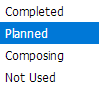 | Initially,
you will be set as "Planned". This allow you to create you whole list
of sections, before you even create your content. Only sections marked as "Completed" will be published to the public, when the article itself is marked with a Status "Publish" (Main tab). The "Not Used" can be done to completely hide a sections from other authors (except current article co-authors), or to simply remind you that a section is not needed anymore. |
Here is an example of a more complete sections.
(1) The section name. Optional, if not entered, the name of the section Type will be used.
(2)
You could opt to not display a section name. This could be useful if
you want the same logical section have multiple source codes.
(3)
"Save Changes and Stay" can be used anytime. This will help you reduce
the risk of loosing your input. Also every time you save, a version of
that section is saved. You could then use the "Preview" (4) to see how
your changes are being formatted.
(5) You can stretch the size
of the Content entry field. The size will be "remembered" for you. This
will not be used to restrict the size of the section being displayed,
as harbour.wiki is a "responsive" web site.
(6) You may select
from a list of predefined fonts. By default sections use a default one.
The list of fonts is specified by type of text, not the actual font
name. Contact the system administrator to propose additional fonts.
(7) If the type of section requires some source code, optionally you could specify a file name for a user to use.
(8)
You can stretch the size of the Source Code entry field. The size will
be "remembered" for you. All source code lines will be non-breaking.
This is done to help with any line numbers.
(9) The list of instructions will be different for any "Type" you select. Ensure you get familiar with all the options.
(10) The "Save Changes" and "Save Changes and Stay" are listed again at the end of the entry field.
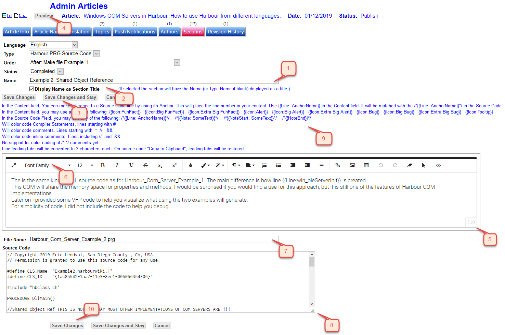
Pasting Print screens.
The
editor used in harbour.wiki was configured to allow you to "Paste"
Images (Use FireFox). The easiest I found is to use a tool like SnagIt
to prepare you images, for example, adding "Callouts".
After you paste an image, you could align it Left, add a border, and resize it.
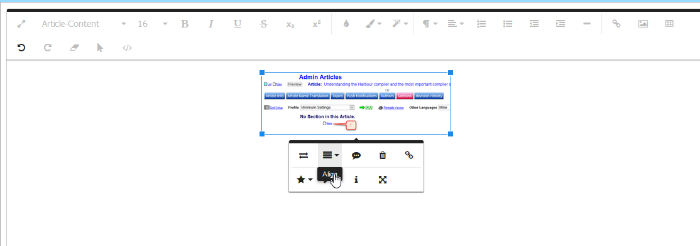
Add a border (1), and resize (2) by garbing a corner
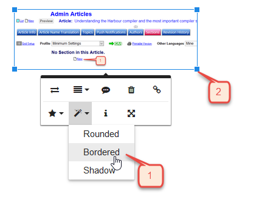
List of Sections
The following is a typical list of sections.
Use
the option (1) to setup different ways to view the list of sections.
You could setup multiple "Profiles". Some that display the content also,
and some with just the minimum information.
If you setup multiple grid profiles, the option (2) will appear.
Some grid columns can show the sections in a particular language. Use option (3) for that purpose.
You can always add more sections using the "New" option (4).
You can also set your grid to let you view your revisions and translations (5).
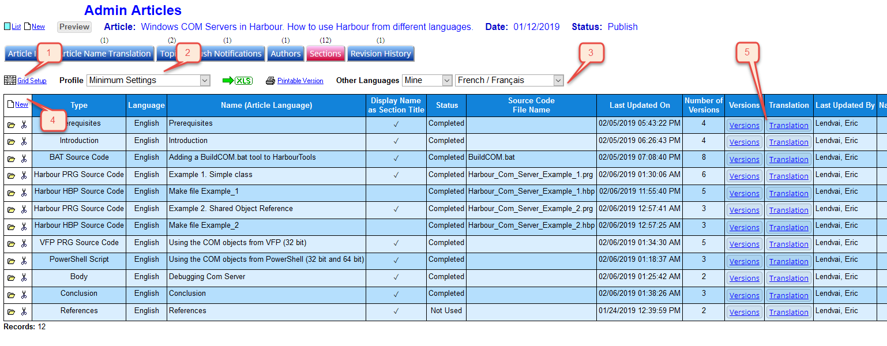
Article Name Translation
This
tab is used to translate the title of this article in different
languages. You could use google translate as a starting point, but like
with most technical articles, those automatic translation fall a little
short. Especially the word "Harbour" gets translated into the location
where boats and ships are parked.
Use the
option (1) to select the languages you would like to update article
names for. The "Mine" comes from the list of languages you did set in
your "My Account" setup screen.
Use option (2) to save your changes and/or view different languages.
By
the the way the list of "Common" Languages is driven by the languages
most commonly used by the core developers of Harbour. Please contact the
system administrator if addition languages should be added to that
list.
But please note that at this time the management
of articles is done in English. Only the publishing of article is really
multilingual.
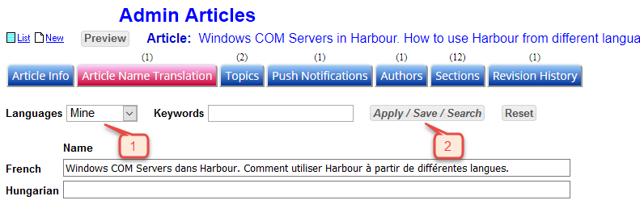
Topics
This
tab is used to let you select the list of Topics this article should be
filed under. This is to help readers find your article. Please do not
select too many topics, since it would overwhelm the readers.
The
list of Topics will most likely change in the future. Please contact
the site administrator to request any changes in the list of available
topics.
Remember to use the "Save Changes" button after you select the Topics.
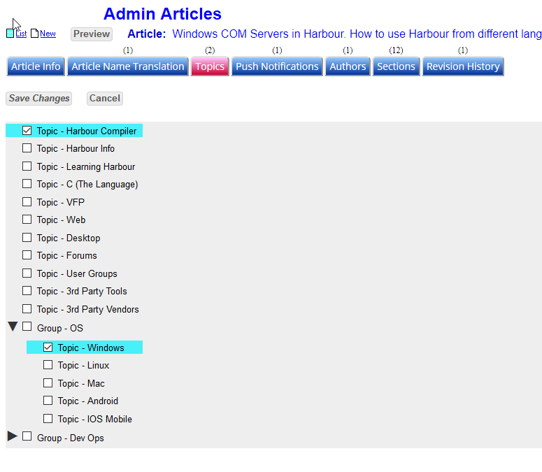
Push Notifications
Only Lead authors will be able to request the system to send Web Push Notifications to all the subscribers.
You should most likely subscribe yourself first as well, so to see what others receive. Subscribe here.
Please only use this option once you are certain you would like to advertise the presence of your article.
You could resend notifications, but this should only be done if a lot of revisions were done to your article.
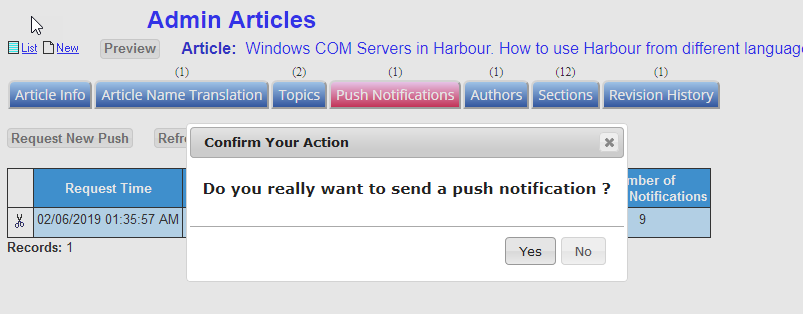
Example of the subscription page.
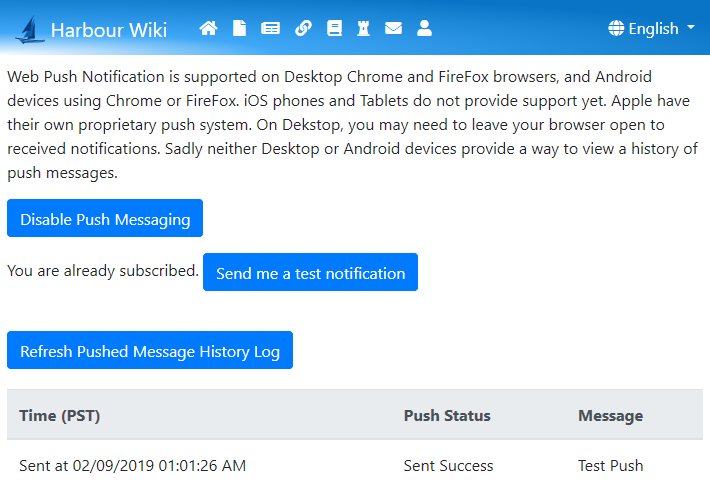
Example of this articles own push message
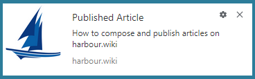
Authors
This
tab is used to manage who can edit the current article. As the person
who created the article, will will automatically be set as a Lead
author. You will be able to manage co-authors. Only the site
administrator can remove or edit Lead authors.
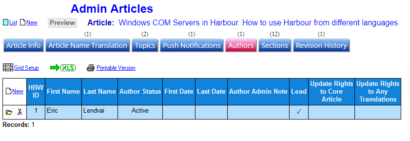
Use the "New" option on the upper left corner of the grid to add other authors.
Click
in the field (1) to select other authors registered in harbour.wiki.
You could also enter "**" to see all possible authors.
Only mark a person as "Lead" if you intend to make the other person a permanent co-author.
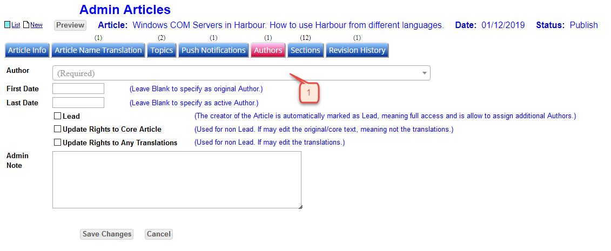
Revision History
This tab is used to tell readers about any changes that may have been done post publishing the article.
The revision history will be display before any article sections are listed.
You may also use the "Grid Setup" to change the column order.
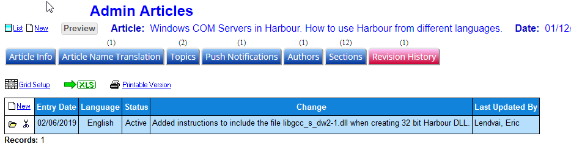
Example of entering a new revision information.
(1) Revision are language specific. So people making translations may not have the same revisions.
(2) Only "Active" entries will be published.
(3) Only plain text entry is allowed, no font formatting or images. Please be brief.
Remember to use the "Save Changes" button
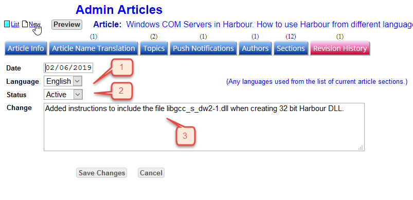
Finding and Viewing Articles
Use option (1) to search for articles created and shared by other authors. Use (2) to trigger the search.
As described in the Sections list screen, you may alter how the grid is displayed.
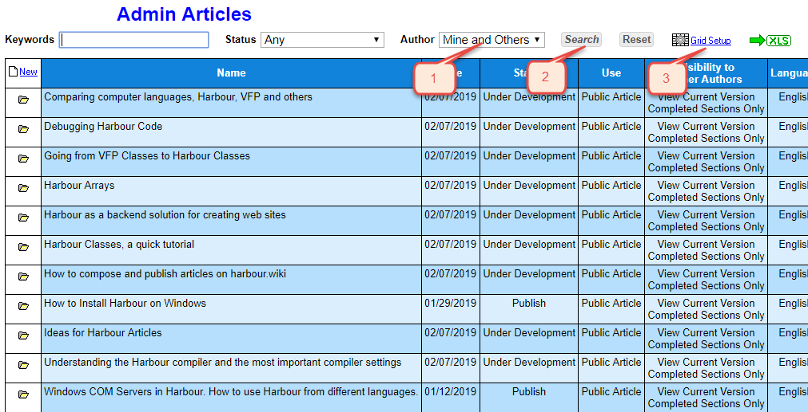
Conclusion
This is a web site and tool that is still evolving. Please contact the site administrator to suggest any enhancements.
I
hope you will be interested and willing to share your knowledge of
Harbour and help others discover all the wonders of this language.
Remember, one of the best way to learn, is to teach.
The browser did not close this tab. It may have been opened directly instead of from the Articles list. Use Back to Articles.